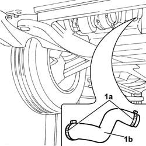

1048B14 AIR DELIVERY PIPE BETWEEN TURBO CHARGER AND HEAT EXCHANGER - REPLACE
- Path
- Procedures > 10 ENGINE > 1048 ENGINE AIR SUPPLY CIRCUIT > 1048B PRESSURE AIR CIRCUIT > 1048B14 AIR DELIVERY PIPE BETWEEN TURBO CHARGER AND HEAT EXCHANGER - REPLACE
- Kind
- repair procedure (removal / refitting; the operation number is the code)
- Applies to
- engines: 2.0 16V JTD, 2.2 16V JTD; all production periods
- Interactive page
- https://sloeber94.github.io/elrnDB-fUlss/en/#/179007011
Applies to: engines: 2.2 16V JTD; all production periods
 Removing
Removing
 Refitting
RefittingOp. 7055B54 UNDER-ENGINE GUARD - R R
1. Open the retaining bands (1a) and remove the pipe (1b).

Applies to: engines: 2.2 16V JTD; all production periods
Refitting
Removing- Place the hose in position and tighten the retaining bands.
Applies to: engines: 2.0 16V JTD; all production periods
Removing
RefittingOp. 7055B54 UNDER-ENGINE GUARD - R R
1. Open the retaining bands (1a) and remove the pipe (1b).
Applies to: engines: 2.0 16V JTD; all production periods
Refitting
Removing- Place the hose in position and tighten the retaining bands.